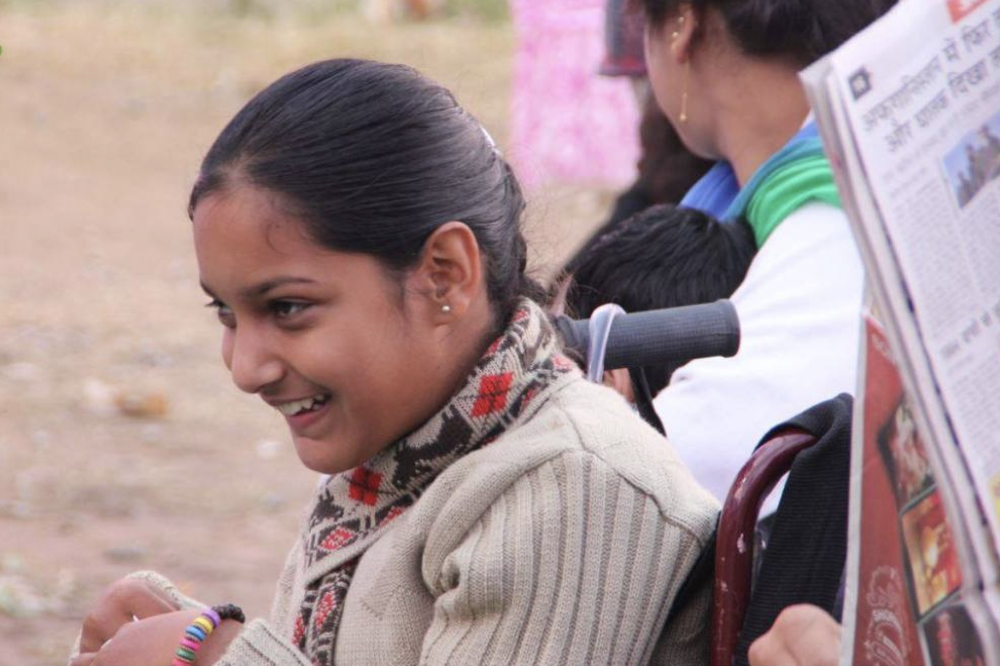

Empower a Child With Disabilities
Children with special needs in rural India often lack access to therapy, education, and medical care. Smile Donor partners with trusted NGOs such as the Ganpati Education Society in Himachal Pradesh to support more than 100 children with conditions like cerebral palsy, autism, and intellectual disabilities. Through home visits, personalized education plans, and regular medical check-ups, children receive consistent support tailored to their needs.
Success Story
Sunil, 13, and his sister Anita, 9, both live with severe developmental disabilities in a remote Himalayan village. With your support, they now receive home-based education three times a week and monthly health checkups. Sunil, who once struggled to feed himself, has gained independence through therapy, which is a major milestone for him and his family. Your contribution helps children like Sunil and Anita grow, learn, and thrive.
Get Involved
Your involvement can transform a child's future.
Get Involved